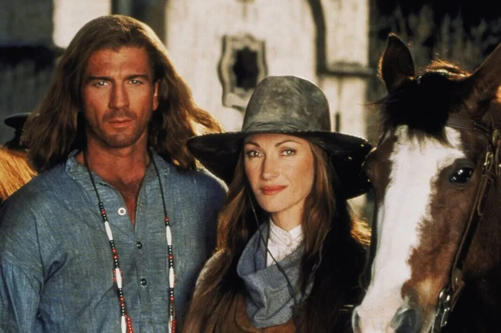
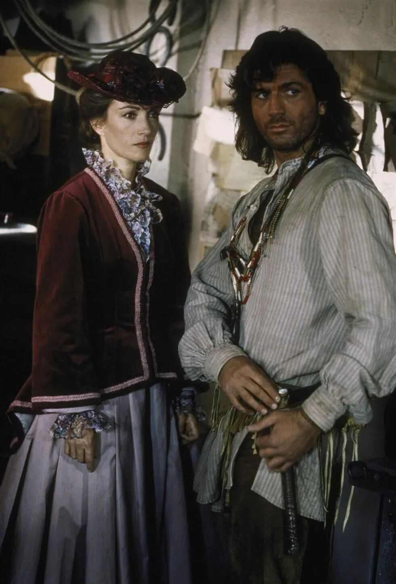

经典美剧《女医生》观剧笔记 3（S1E7）
欢迎点击上方名片关注我。您的支持是我坚持原创的最大动力。
这个系列停了有一阵子了。第一篇里我写过，写这些笔记不为别的，只为了这部剧曾经和再次带给我的美好感觉，顺带盼着有同样看过这部剧的朋友，会喜欢我的碎碎念。没想到还真有朋友陆续留言，说当年也在央视看过，一直念念不忘。有人惦记着，我这懒病就不好意思再犯了，于是又把资源翻出来，继续往下看。这一篇写第一季第七集《恶水》（Bad Water），讲的是小镇的水出了问题。
另外有个小改变先说在前面：有朋友提意见，说我之前的剧评写得太像流水账。想想也是，从这篇开始，剧情我尽量写得简洁些，只介绍精华和我喜欢的部分，多留些篇幅给碎碎念。
S1E7
顺水寻源
小镇上接连有人病倒。症状很怪：脱发，牙龈出血，人也越来越虚弱。已经有一位在溪边私酿酒的老兄，被发现死在了自己的酒摊旁。奎恩医生把这些病人的症状凑到一起，得出一个在当时相当大胆的结论：汞中毒——镇上人喝的水里，有水银。
小镇的饮水来自一条叫柳溪（Willow Creek）的小溪。奎恩医生的目光顺着水往上游去：溪水流经一处金矿，矿主是富商克莱·哈丁，他的选矿作坊用水银从矿石里分离黄金（这在当时是淘金的标准工艺，叫汞齐法），用过的水就顺手排回溪里。奎恩医生上门交涉，想取些水样化验，哈丁根本不买账：我的地盘，凭什么让你查？
这是1868年。没有环保局，没有水质标准，更没有记者和网络曝光。一个女医生想证明一条溪水有毒，手里只有医学常识和一张嘴。说实话，就算放到今天，污染这种事想讨个说法，也从来不是光靠讲道理就行的。
取样必须去上游。奎恩医生"强征"了Sully做向导——用"强征"这个词，是因为Sully起初一百个不情愿。进山这一路，对从小在波士顿长大的奎恩医生来说堪称受难：半路窜出一头美洲狮，惊跑了他们的马；她自己还摔断了手腕。可就是带着这么一只伤手，她一路上还两度救了Sully的命。Sully看她的眼神，从这一集开始明显不一样了。

我觉得这一集是他们两人关系真正的起点。之前Sully帮她，多半是出于对Charlotte的情分和对她胆量的欣赏；这一集之后不一样了——能在山里活下来、还能反过来救命的人，在Sully的世界里就是自己人了。奎恩医生融入这个小镇，从来不是靠讨好，是靠一次次把命押上去。
两人好不容易取到水样、证实了污染，却被哈丁的手下逮个正着，扣了起来。镇上这边听说医生和Sully进山未归，也急了，凑出一支救援队：杂货店老板洛伦、理发师杰克、电报员霍勒斯、酒馆老板汉克，再加上马修。结果这支队伍在山里原地打转，还惹上一只臭鼬，被喷了个正着，最后靠Sully那条狼犬才找着回家的路。
这段纯属编剧安排的减压阀，主线气氛太紧，得放他们出来丢丢人。不过话说回来，这帮人成事不足，心却是热的，这也正是这个小镇的底色。

事情最后的转机，又应了那句老话：污染的账，最后落到了污染者自己头上。哈丁的儿子卡尔文喝了溪水，也中了毒。眼看着亲儿子在奎恩医生手里一点点被救回来，哈丁终于低了头，答应关掉作坊，不再往溪里排汞。
这一段值得多想一想。哈丁不是被科学说服的——取样化验他不在乎，镇民的死活他也不在乎；他是被"父亲"这个身份说服的：毒水流进自己儿子的喉咙，道理一瞬间就讲通了。一百多年过去，这个故事的核居然一点都不过时。
这一集还有个一笔带过的小尾巴：黑人姑娘格蕾丝在奥利弗小姐的资助下，在罗伯特的马厩后面开起了自己的小餐馆。主线之外，这类小事最见这部剧的用心——一个小镇的活气，就是靠这些小生意、小人情一点点攒起来的。
说几句结尾的感想。
这一集表面上讲中毒，实际上讲的是"追责"二字。奎恩医生做的事，用今天的话说叫溯源：从症状反推毒物，再顺着水流找到源头。十几年前，伦敦的约翰·斯诺医生靠同样的方法，查出霍乱的源头是一口公共水泵，干脆把泵把手给卸了。科学的方法一百多年前就摆在那里，难的从来不是方法，而是让既得利益者认账。哈丁认账靠的是儿子的命，这个代价，想想还是挺沉的。
另外就是汞齐法值得提一句。十九世纪的淘金热里，水银被大量用在加州和科罗拉多的矿山，流进河里的汞，一百多年后的今天还在被治理。编剧把这样一个真实的历史细节放进一集家庭剧里，不动声色——这也是我一直喜欢这部剧的原因：它讲的是人情故事，可脚底下踩着的，全是真实的历史。
往期精彩文章：